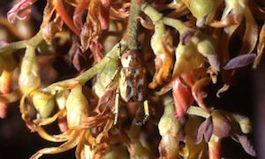
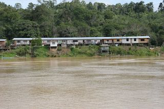

研究テーマ
植物と送粉者
わたしたちが普段目にする植物は動くことができないように思いますが、多くの被子植物は2つの移動方法を持っています．それが花粉散布と種子散布です．多くの植物では、花粉は蜜や花粉を求めて訪れた動物の体に乗って，同じ種類の別の植物へ、時には何キロもの距離を運ばれます．その過程は「送粉」と呼ばれます．送粉は被子植物の外交配に欠かせない過程ですが、多くの種ではその過程を動物、とくに昆虫に頼っています．植物は、蜜や花粉を求めてやってくる昆虫をさまざまな方法で操作し送粉を達成しているのです．
共生のネットワークの進化と維持
ダーウィン以来多くの研究者が送粉の研究に取り組んできましたが、 送粉についての我々の理解はまだきわめて不十分なものです．たとえば、１種の動物のみに送粉される植物から数百種に送粉される植物まで送粉者との関係は多様ですが、送粉者の特殊性を決める要因はよくわかっていません．また、下記の一斉開花のような劇的な環境変動が植物−送粉者相互作用にどのように影響するでしょうか？
花の上の微生物

微生物−見過ごされてきた訪花者
栄養豊富な蜜や花粉の発芽床も備えた花は、微生物（おもに真菌・細菌）にとって理想的なハビタットです．農作物においては花を介して感染する病原微生物が古くから知られていましたが、花上の微生物は送粉生態学においてはほとんど注目されてきませんでした．もしかしたら送粉者は、花粉ばかりでなく病原微生物も運んでいるのかもしれません。花の上にどのような微生物がいるのか、植物の繁殖や送粉者との関係にどのような影響を与えるのかといった進化・生態学的視点からの研究は始まったばかりです．分離・培養とアンプリコン・シーケンス解析を組み合わせ、花の上の細菌叢とその機能について調べています．
ボルネオの熱帯雨林と社会
社会-生態システム
現在、地球上のあらゆる生態系が人間活動により危機に瀕しています．熱帯雨林ももっとも危機的状況にある生態系の１つです．この問題を理解するためには、人間活動の森林への直接的な影響ばかりでなく、長期的、間接的な影響や、生態系の劣化が及ぼす社会への影響をも 評価する必要があります．総合地球環境学研究所のプロジェクト人間活動下の生態系ネットワークの崩壊と再生では、このような課題に取り組みました．